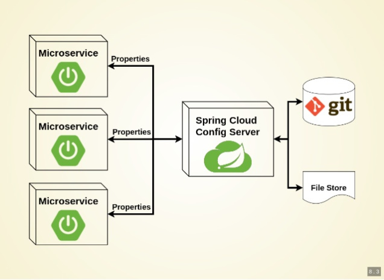
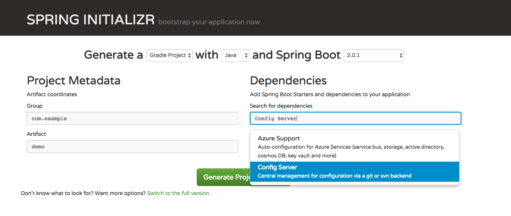
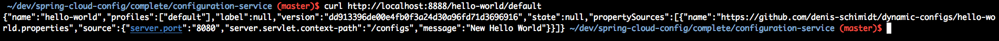

Properties dinâmicos com Spring Cloud Config
Publicado em:
@denis.oliveira
O problema existente hoje...
Bom, primeiramente posso dizer que pensei nesse tema por já ter presenciado, algumas vezes, problemas em ambiente de produção, devido a configurações com valores incorretos ou mesmo falta delas por esquecimento.
Agora imagine isso ocorrendo no final de um deploy no ambiente de produção, e pior, com os arquivos de configurações (no caso de aplicações Java, normalmente arquivos properties) dentro da aplicação. Um novo deploy teria que ser feito em N máquinas. Caso o arquivo de configurações estivesse fora da aplicação, externalizado, o mesmo teria que ser alterado em todas as máquinas, exigiindo um restart das aplicações, ou um novo deploy teria que ser executado.
Mas não apenas isso: a configuração poderia ser algum parâmetro relacionado ao negócio, como por exemplo, um valor X utilizado em alguma operação, e que repentinamente teria que ser mudado e novamente não seria algo simples.
Pensando em resolver esse problema, eis que surge o Spring Cloud Config. A idéia dele é simples. Um repositório de configurações centralizado, que pode utilizar o git para versionamento de arquivos (que podem estar em serviços como GitHub ou GitLab, ou simplesmente arquivos locais), e que, quando o conteúdo do arquivo for modificado e versionado com um commit/push, os mesmos fossem alterados dinamicamente (através de uma URI HTTP POST) na minha aplicação sem restart ou mesmo deploy em todas as máquinas.
Como funciona de forma geral
Abaixo a imagem ilustra de forma geral como o Spring Cloud Config funciona.

Inicialmente temos o Config Server, que basicamente lê as configurações contidas em algum lugar, seja um arquivo (gerenciado pelo git, podendo estar armazenado em algum serviço como GitHub ou GitLab, mas não obrigatoriamente) e as disponibiliza para os microserviços ou outros tipos de aplicações. Após qualquer mudança feita em um desses arquivos (commit), as novas configurações estarão automaticamente disponíveis para aplicações clientes (microserviços). Porém, para que o microserviço de fato use essa alteração sem restart é necesssário fazer uma chamada http post como veremos mais a frente.
Vamos ao que interesse, ou seja, código
Chega de falatório e vamos ao código.
Primeiramente crie seu repositório (no exemplo vou utilizar o GitHub para hospedagem), seguindo a seguinte regra. O nome do seu arquivo de configurações precisa coincidir com o nome da aplicação cliente, definido no arquivo bootstrap.properties pela propriedade “spring.application.name”. Por exemplo:
spring.application.name=hello-world
Nesse exemplo, meu arquivo irá chamar-se hello-world.properties.
Criando o Config Server
Uma vez criado o repositório, precisamos criar uma aplicação Spring Boot que será o Config Server.
Usando o Spring Initializr
O ideal é que o Config Server seja um projeto Spring Boot independente de todas as outras aplicações existentes, visto que ele será responsável por gerenciar a configurações de todas elas.
Caso use o Spring INITIALIZR para criar um novo projeto Spring, basta adicionar a opção Config Server que ele irá gerar o projeto já configurado.

Adicionando manualmente em um projeto Spring já existente
Caso opte por essa segunda opção, basta adicionar as seguintes dependências.
No Maven
<dependencies>
<dependency>
<groupId>org.springframework.cloud</groupId>
<artifactId>spring-cloud-config-server</artifactId>
</dependency>
</dependencies>
<dependencyManagement>
<dependencies>
<dependency>
<groupId>org.springframework.cloud</groupId>
<artifactId>spring-cloud-dependencies</artifactId>
<version>Finchley.M8</version>
<type>pom</type>
<scope>import</scope>
</dependency>
</dependencies>
</dependencyManagement>
...
<repositories>
<repository>
<id>spring-milestones</id>
<name>Spring Milestones</name>
<url>https://repo.spring.io/libs-milestone</url>
<snapshots>
<enabled>false</enabled>
</snapshots>
</repository>
</repositories>
No Gradle
dependencies {
compile('org.springframework.cloud:spring-cloud-config-server')
}
dependencyManagement {
imports {
mavenBom "org.springframework.cloud:spring-cloud-dependencies:Finchley.M8"
}
}
repositories {
maven {
url 'https://repo.spring.io/libs-milestone'
}
}
Uma vez configurado as dependências, vamos criar o config server. Basta adicionar @EnableConfigServer em uma aplicação Spring Boot e pronto: um servidor de configurações será criado.
@EnableConfigServer
@SpringBootApplication
public class ConfigServiceApplication {
public static void main(String[] args) {
SpringApplication.run(ConfigServiceApplication.class, args);
}
}
Feito isso, precisamos configurar onde o back-end de configurações que será utilizado. No nosso exemplo, utilizei o GitHub, e o local do repositório deve estar configurado da seguinte forma:
spring.cloud.config.server.git.uri=https://github.com/denis-schimidt/dynamic-configs
Dessa forma, nosso servidor estará pronto para obter os arquivos de propriedades a partir da URL do repostório, e a cada commit e push realizado, automaticamente detectará isso e disponibilizará para as aplicações clientes.
Nesse momento, se uma aplicação cliente fizesse restart, ela já teria suas configurações atualizados. Porém a idéia é poder fazer isso sem restart, como veremos mais a frente.
Outro ponto importante é que as configurações obtidas a partir do servidor sobrescrevem todos as configurações definidas na aplicação cliente (application.properties).
É possível verificar seus properties carregados via http get (browser ou curl) pela URI http://localhost:<port>/<client-aplication-name>/<profile>, como mostrado abaixo:

Configurando o Config Server no client
Assim, finalmente chegamos a aplicação cliente, que utiliza as configurações. A diferença para as dependências do servidor é o artefato spring-cloud-config-client (ao invés do spring-cloud-config-server).
A anotação @RefreshScope propicia essa atualização. No exemplo abaixo o valor na propriedade “message” será recuperado a partir do servidor de configurações, e caso a propriedade não exista (ou o servidor não esteja disponível), o valor “Hello default” será usado.
@RefreshScope
@RestController
public class HelloWorldController {
@Value("${message:Hello default}")
private String message;
@GetMapping("/message")
String getMessage() {
return this.message;
}
}
Para atualizarmos o cliente sem restart usamos o seguinte comando e ele responderá quais configurações foram atualizados, como exibido abaixo:
### Chamada http post ao Actuator da aplicação cliente
curl -X POST localhost:8080/<client-application-context>/actuator/refresh -H "Content-Type: application/json"
### Resposta da chamada hhtp post, indicando o que foi atualizado
["config.client.version", "message"]
Uma vez feito isso, basta dar o famoso F5 na página da aplicação cliente e tudo estará atualizado dinamicamente.
Testes Integrados
Podemos, para finalizar, garantirmos com testes de integração (usando as classes disponíveis no Spring Boot), o funcionamento das configurações no cliente, como no exemplo a seguir. No teste, inicialmente usamos um valor previamente definido na aplicação cliente e através do TestPropertyValues, ConfigurableEnviroment e ContextRefresher é possível validar se o valor de fato está sendo atualizado.
@RunWith(SpringRunner.class)
@SpringBootTest
public class ConfigClientApplicationTest {
@Autowired
private ConfigurableEnvironment environment;
@Autowired
private HelloWorldController controller;
@Autowired
private ContextRefresher refresher;
@Test
public void contextLoads() {
assertThat(controller.getMessage()).isNotEqualTo("Hello test");
TestPropertyValues
.of("message:Hello test")
.applyTo(environment);
assertThat(controller.getMessage()).isNotEqualTo("Hello test");
refresher.refresh();
assertThat(controller.getMessage()).isEqualTo("Hello test");
}
}
Conclusão
Podemos ver nesse post, de forma geral, como termos configurações centralizadas usando o Spring Cloud Config, em conjunto com aplicações Spring Boot e seus benefícios.
Caso queiram ver o código, o mesmo está disponibilizado no github spring-cloud-config e suas configurações.
Bom amigos, é isso. Caso tenham dúvidas, sugestões estamos a disposição. Até a próxima!